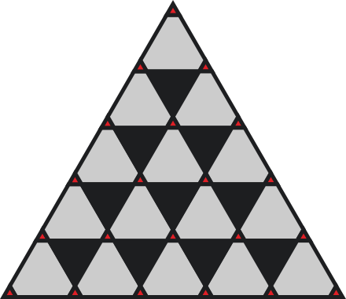
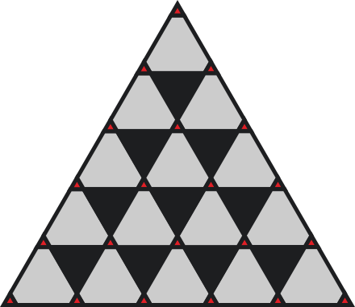

Government 
Government 
I want to said something about it and give my vision about politics that I really don’t like. It’s like a vision from your stage, everyone thinks that their stage upper than other and don’t said it for others, but in the result of all there is 1 stage which more than all combined together – Earth. I think that everything has an interest to grow, it’s really logically and I think that humans make planet government, that show all what needed for others.
I want to make from simple politics something abstract because if we want to make something that contain truth. We need to use 3rd communicator in all connections between people. There are may be Artificial Intelligence that be set up from all-around countries.
I see in future something like combining internet and government. Where government – is place, Internet – time. Here we are I want to see combining internet and government It will be great because if internet create government, people can’t kill it or remove. It will be like crypto on all computers. We may be anywhere and government can’t fight with it by physical power. It will be greatest part of changing, it starts from internet and comes government. After it all countries may start think about forgot army. Because here internet and equal in all humans.
What I want to said by equal in all humans? All people think about others, they can’t say something bad about their DNK characteristics, I think it’s great. If country that have military in moment when all remove it from government structure try to attack another, they will be killed from yourself, from their citizens, that know about this government bad.
I want to see something that can change more than simple world. That can change from start and beginning. That can change thinking way and all-around.